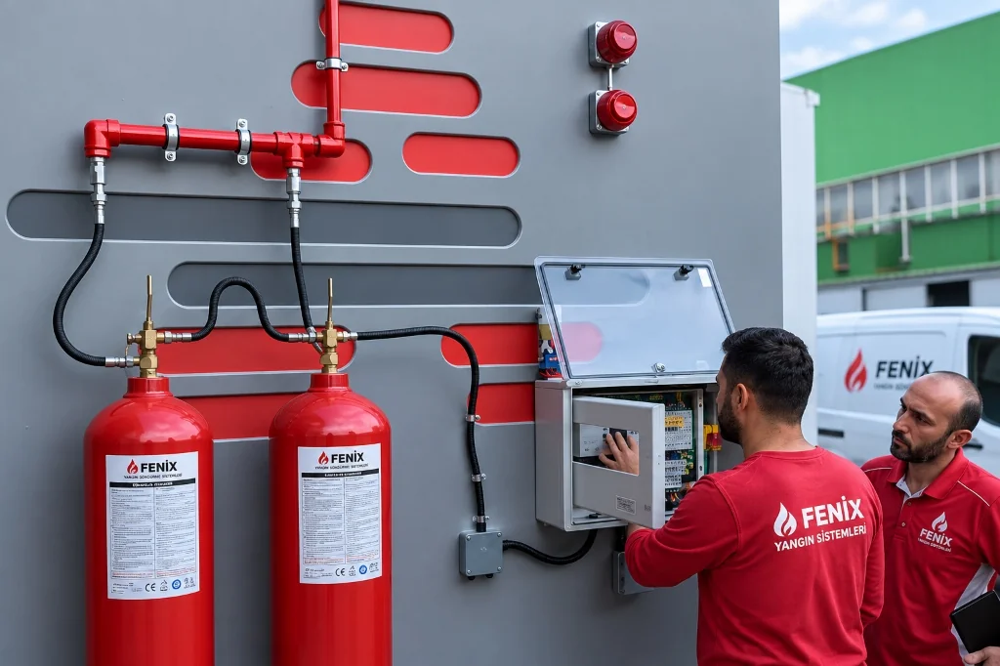

Yangın Algılama ve İhbar Sistemleri
Yapılarda ve endüstriyel tesislerde yangın riskini başlangıç anında tespit ederek tahliye uyarılarını başlatan ve söndürme altyapılarına güvenilir tetikleme sağlayan entegre erken algılama çözümleri.
Adresli ve konvansiyonel sistem mimarileri, hassas duman ve ısı dedektörleri, manuel yangın ihbar butonları ve kontrol modülleri ile NFPA 72, ISO 7240 ve EN 54 mühendislik ilkelerine uygun olarak projelendirilir.

Yangın Algılama ve İhbar Sistemi Nedir?
Yangın algılama ve ihbar sistemleri; binalarda, endüstriyel tesislerde ve kritik teknik hacimlerde meydana gelebilecek olası bir yangın tehlikesini başlangıç aşamasında fiziki veya kimyasal belirtiler (duman partikülleri, sıcaklık artışı, alev ışıması veya yanma gazları) üzerinden tespit eden elektronik güvenlik altyapılarıdır.
Uluslararası standartlarda genel prensipleri ISO 7240-1:2025 ve NFPA 72 normları çerçevesinde tarif edilen bu sistemler; sahadaki algılayıcılardan (dedektörler ve ihbar butonları) gelen elektriksel uyarıları yangın alarm kontrol panelinde değerlendirir. Doğrulanan tehlike sinyali ile sesli ve ışıklı uyarı cihazları (siren ve flaşörler) anında harekete geçirilir, bina tahliyesi başlatılır ve merkezi izleme birimlerine sinyal aktarılır.
Yangın algılama sistemlerinin yapıdaki kapsamı, dedektör yoğunluğu ve konfigürasyonu; uygulanabilir güncel mevzuat, yapı tehlike sınıfı, kullanım amacı ve yerel gereklilikler proje bazında değerlendirilerek belirlenir. Sistem aynı zamanda otomatik gazlı yangın söndürme tesisatlarına, duman tahliye kapaklarına ve bina otomasyon altyapısına arayüz sağlayarak yangının büyümeden sınırlandırılmasında kilit rol üstlenir.
Yangın Algılama Sistemi Nasıl Çalışır?
Yangın algılama ve ihbar sistemleri; fiziki ortam şartlarındaki sapmaları saniyeler içinde analiz ederek insan hayatını ve yapı varlıklarını güvenceye alan koordineli bir çalışma sırasına sahiptir. Farklı bina tipleri ve özel risk mahallerinde alarm senaryoları çeşitlilik gösterebilmekle birlikte genel çalışma süreci beş ana aşamada şekillenir:
Erken Algılama ve Tetikleme
Mahalde oluşan yanma ürünleri (duman, sıcaklık artışı) dedektör hücresine ulaştığında sensör akımı değişir veya acil durumu gören personel manuel yangın ihbar butonuna basar.
Kontrol Paneli Değerlendirmesi
Merkezi yangın alarm paneli gelen sinyali doğrular; yanlış alarm olasılığına karşı gerekirse ikincil doğrulama algoritmasını çalıştırır, alarm zonunu veya noktasal cihaz adresini ekranda gösterir.
Sesli ve Görsel Alarm Yayımı
Panel, kata veya tüm yapıya bağlı elektronik sirenleri, flaşörleri ve gerekiyorsa sesli acil anons sistemini eşzamanlı devreye alarak bina sakinlerini ve personeli tahliye uyarısına geçirir.
Merkez Bildirimi ve Raporlama
Yangın alarm sinyali güvenlik merkezine, bina yönetim otomasyonuna ve haberleşme modülleri üzerinden yetkili acil müdahale ekiplerine anlık olarak aktarılır.
Söndürme ve Güvenlik Arayüzü
Sistem giriş/çıkış modülleri üzerinden havalandırma damperlerini kapatır, yangın kapılarını serbest bırakır, asansörleri acil kata yönlendirir ve gazlı söndürme paneline onay sinyali gönderir.
Mühendislik Notu: Her tesisin mimari yapısı, yangın yükü ve tahliye planı farklıdır. Bu nedenle algılama ve alarm sekansları yapıya özgü senaryo matrislerine göre değişkenlik gösterir; her projenin işletme senaryosu bağımsız mühendislik tasarımıyla şekillendirilir.
Yangın Algılama Sistemlerinin Temel Bileşenleri
Güvenilir ve kesintisiz bir yangın ihbar altyapısı; saha cihazlarının kontrol santraliyle uyum içinde veri alışverişinde bulunmasını sağlayan donanımlardan oluşur. Fenix Yangın mühendislik çözümlerinde kullanılan onaylı temel sistem bileşenleri şunlardır:
Yangın Alarm Kontrol Paneli
Sistemin ana beynidir. Sahadaki tüm dedektör ve modüllerden gelen verileri işler, yangın/hata durumlarını ayırt eder, sirenleri tetikler ve yedek akü grubu sayesinde enerji kesintilerinde çalışmayı sürdürür.
Duman Dedektörü
Ortamdaki görünür veya sinsi duman partiküllerini optik saçılma prensibiyle algılar. İçten içe yavaş yanan yangınların erken evrede tespiti için ofis, koridor ve odalarda temel algılayıcıdır.
Isı Dedektörü
Belirli bir sıcaklık eşiğine (sabit ısı) veya sıcaklığın birim zamandaki ani artış hızına (termovelosimetrik) tepki verir. Duman, buhar veya toz bulunan mutfak, kazan dairesi ve otoparklarda kullanılır.
Manuel Yangın İhbar Butonu
Yangını gözlemleyen personelin camı kırarak veya esnek membran kapağa basarak sistemi anında ve gecikmesiz manuel alarma geçirmesini sağlayan acil uyarı elemanıdır.
Sesli ve Görsel Alarm Cihazları
Yüksek desibelli elektronik yangın sirenleri, flaşörler ve kombine flaşörlü sirenler; gürültülü veya görme/işitme engeli bulunabilecek ortamlarda tahliyenin eksiksiz duyurulmasını sağlar.
Giriş/Çıkış Modülleri & Devre Ekipmanları
ISO 7240-18 prensiplerine uygun I/O arayüz modülleri, kısa devre izolatörleri ve yangına dayanıklı özel kablo altyapısı; harici sistemlerle kesintisiz sinyal iletişimini ve hat sürekliliğini garanti eder.
Konvansiyonel ve Adresli Yangın Algılama Sistemleri
Yangın algılama teknolojileri temelde iki ana topolojik mimari üzerinde kurgulanır: Konvansiyonel (Bölgesel) Sistemler ve Adresli (Noktasal) Sistemler. Tesisin büyüklüğü, oda adedi, kat planı ve işletme gereksinimlerine göre doğru mimari mühendislik keşfi ile tayin edilir.
Konvansiyonel Yangın Algılama Sistemleri
Konvansiyonel sistemlerde dedektörler ve yangın ihbar butonları panodan çıkan zon hatlarına (bölge hatlarına) seri veya paralel olarak bağlanır ve hattın sonuna hat sonu direnci (EOL) yerleştirilir. Bir zon hattında yangın meydana geldiğinde panel alarmın hangi bölgeden (örneğin Kat 1 veya Depo Alanı) geldiğini bildirir; ancak o zonda bulunan onlarca dedektörden tam olarak hangisinin tetiklendiğini noktasal olarak ayırt edemez.
- Uygun Alanlar: Küçük işletmeler, tek hacimli mağazalar, sınırlı oda sayısı bulunan atölyeler ve açık alan depolar.
- Avantajlar: Düşük ilk ekipman maliyeti, basit montaj ve kolay kullanım prensibi.
- Sınırlar: Yangının kesin odasını bildirmez; geniş binalarda arama süresi yaratır, kablolama metrajı hat sayısına göre artar.
Adresli Yangın Algılama Sistemleri
Adresli sistemlerde tüm saha elemanları (dedektörler, butonlar, sirenler ve röle kontrol modülleri) kontrol paneline iki telli bir çevrim hattı (loop) üzerinden bağlanır. Her cihaz benzersiz bir sayısal adrese sahiptir. Panel her saniye sahadaki tüm cihazları sorgular (polling); yangının veya arızanın hangi katta, hangi odada ve tam olarak hangi dedektör numarasıyla gerçekleştiğini anlık metin mesajı olarak ekrana yansıtır.
- Uygun Alanlar: Çok katlı binalar, oteller, hastaneler, veri merkezleri, üniversiteler ve geniş endüstriyel kampüsler.
- Avantajlar: Tam noktasal konum tespiti, dedektör kirlilik seviyesi raporlama, loop yapısıyla kablo tasarrufu ve karmaşık senaryo yönetimi.
- Sınırlar: İleri seviye mikroişlemci tabanlı yazılım ve programlama uzmanlığı gerektirir.
Duman ve Isı Algılama Teknolojileri
Yangının fiziksel gelişim karakteristikleri yanıcı maddenin türüne göre değişiklik gösterir. Ahşap ve tekstil gibi malzemeler başlangıçta yoğun duman yayarken, yanıcı sıvılar ve gazlar hızla yüksek ısı ve alev üretir. Fenix Yangın mühendisliğinde ortama uygun sensör teknolojisi tayin edilir:
Optik Duman Algılama Teknolojisi
Uluslararası ISO 7240-7:2023 standartları kapsamında tanımlanan noktasal optik duman dedektörleri; sensör odacığı içerisindeki kızılötesi ışık huzmesinin duman partikülleri tarafından saçılması (Tyndall etkisi) prensibiyle çalışır. Yavaş gelişen, içten içe yanan ve yoğun duman açığa çıkaran yangınları ilk dakikalarda tespit etmede en yaygın çözümdür.
Uygulama: Ofis, koridor, otel odası, veri odasıIsı Algılama Teknolojileri
İki farklı fiziksel prensiple uygulanır: Sabit Sıcaklık Dedektörleri, ortam sıcaklığı önceden kalibre edilmiş bir eşiği (örneğin 58°C veya 78°C) aştığında alarma geçer. Sıcaklık Artış Hızı (Termovelosimetrik) Dedektörleri ise ortam sıcaklığının birim zamanda olağandışı hızla yükselmesini izleyerek alevli yangınlara hızla tepki verir.
Uygulama: Mutfak, otopark, kazan dairesi, çamaşırhaneKombine (Çoklu Sensörlü) Dedektörler
Optik duman sensörü ile termal sensörü tek bir gövdede birleştiren akıllı dedektörlerdir. Mikroişlemci algoritması, ortamdaki duman partikülleri ile sıcaklık eğrisini eşzamanlı değerlendirir. Toz veya nem kaynaklı sahte alarmları elerken, hem sinsi dumanlı hem de ani alevli yangınlarda üst düzey doğruluk sağlar.
Uygulama: Kritik endüstriyel alanlar, hastane, laboratuvarÖzel Algılama: Işın Tipi & Hava Örnekleme
Tavan yüksekliği 8 metreyi aşan atriumlar, lojistik depolar ve hangarlarda noktasal dedektör yerine alıcı-vericili Işın Tipi (Beam) Dedektörler; veri merkezleri ve temiz odalarda ise hava kanallarından emilen havayı lazer hücresinde analiz eden Çok Erken Uyarı Hava Örneklemeli (Aspirating) Sistemler tercih edilir.
Uygulama: Depolar, fabrikalar, veri merkezleri, müzelerYangın Algılama Sistemleri Nerelerde Kullanılır?
Yangın algılama ve ihbar sistemleri; can güvenliğinin korunması, bina tahliyesinin organize edilmesi ve kritik iş süreçlerinin sürdürülebilirliği amacıyla geniş bir tesis yelpazesinde kurulur. Sistem tasarımı mahalin mimarisine, kullanım amacına ve yangın yüküne göre şekillendirilir:
Yüksek Riskli ve Endüstriyel Tesisler
Üretim sahaları, kimya tesisleri, otomotiv fabrikaları ve boyahaneler; yanıcı madde yoğunluğu nedeniyle adresli dedektörler ve kombine sensörlerle sürekli izlenir.
Oteller ve Konaklama Yapıları
Oteller, moteller, öğrenci yurtları ve misafirhanelerde; misafir odalarında dedektörler, ortak koridorlarda ihbar butonları ve kademeli acil anons senaryoları kurgulanır.
Hastaneler ve Sağlık Kuruluşları
Yatan hasta katları, ameliyathaneler ve laboratuvarlarda paniği önlemek için flaşörlü sessiz ikazlar ve güvenlik merkezine doğrudan noktasal adres bildirimi esastır.
Teknik Hacimler ve Enerji Odaları
Trafo odaları, jeneratör daireleri, elektrik panoları ve UPS odaları gibi yangın riski barındıran teknik hacimlerde gazlı söndürmeyle entegre koruma sağlanır.
Lojistik Depolar ve Antrepolar
Yüksek istifleme yapılan depolama alanlarında ışın tipi duman dedektörleri (beam) ve acil kaçış kapısı ihbar butonları ile geniş hacim güvenliği tesis edilir.
Veri Merkezleri ve Sistem Odaları
Veri merkezleri ve sunucu odalarında asma tavan üstü ve yükseltilmiş döşeme altı noktasal dedektörler ve erken hava örnekleme sistemleri uygulanır.
Mevzuat ve Proje Değerlendirmesi: Yapılarda yangın algılama ve ihbar sistemlerinin zorunluluk kapsamı, dedektör yerleşim sıklığı ve kaçış yolu buton mesafeleri; uygulanabilir güncel mevzuat hükümleri, bina kullanım sınıfı, yapı yüksekliği ve onaylı itfaiye projeleri bazında her tesis için bağımsız olarak projelendirilmelidir.
Gazlı Yangın Söndürme Sistemleriyle Entegrasyon
Yangın algılama ve ihbar sistemleri; tek başına bir uyarı mekanizması olmanın ötesinde, kritik hacimlerde kurulu olan otomatik gazlı söndürme sistemlerinin güvenilir şekilde devreye girmesini sağlayan birincil tetikleme arayüzüdür.
Fenix Yangın mühendisliğinde gazlı söndürme mahallerinde yanlış deşarjların ve gereksiz gaz kayıplarının önlenmesi amacıyla Çapraz Zon (Cross-Zoning) prensibi uygulanır. Mahale yerleştirilen iki bağımsız dedektör çevriminden (Zone 1 ve Zone 2) yalnızca biri alarm verdiğinde birinci seviye tahliye uyarısı başlar; her iki dedektör hattı da yangını doğruladığında söndürme paneli geri sayım sayacını (örneğin 30 saniyelik tahliye süresini) aktive ederek gaz boşaltma solenoidini tetikler.
Algılama altyapısı aşağıdaki Fenix gazlı söndürme sistemleri ile tam entegre çalışacak şekilde projelendirilir:
- FM200 Gazlı Yangın Söndürme Sistemleri — Sistem odaları ve elektrik mahallerinde çapraz zonlu söndürme kontrol paneli arayüzü.
- Novec 1230 Gazlı Yangın Söndürme Sistemleri — Kritik elektronik ve arşiv hacimlerinde hassas duman algılamalı temiz gaz aktivasyonu.
- CO₂ Gazlı Yangın Söndürme Sistemleri — Trafo ve makine dairelerinde deşarj öncesi katı tahliye kilitleri ve gecikme uyarıları.
- Pano İçi Yangın Söndürme Sistemleri — Elektrik panolarında basınç anahtarı ve izleme modülleriyle bina yangın santraline durum bildirimi.
Entegre Söndürme Güvenlik Matrisi
Mahal içi sesli sirenler devreye girer, personele ön uyarı verilir; gaz deşarjı başlamaz.
Yangın doğrulanır, deşarj gecikme sayacı başlar, "Gaz Boşalıyor" ışıklı ikaz tabelaları yanar.
HVAC damperleri kapanır, fanlar durdurulur; gerekirse acil bekletme (abort) butonuyla süre uzatılabilir.
Solenoid aktüatör elektrik darbesiyle açılır, söndürücü gaz 10 saniye içinde mahale boşaltılır.
Yangın Algılama Sistemi Tasarımı ve Projelendirme
Yangın algılama sistemi projelendirmesi; rastgele cihaz yerleşimi ile değil, yapının mimari hacmi, kullanım senaryosu, havalandırma akımları ve uluslararası yangın mühendisliği standartları temel alınarak gerçekleştirilir. Fenix Yangın proje süreçleri şu disiplinleri kapsar:
1. Yapı ve Risk Analizi
Bina mimari planları, tavan kiriş derinlikleri, asma tavan ve yükseltilmiş döşeme boşlukları, hava sirkülasyon kanalları ve yangın kompartıman sınırları incelenir.
2. Algılama Cihazlarının Seçimi
Her odanın işlevine göre optik duman, ısı, kombine veya ışın tipi dedektör tipleri belirlenir; mahalde sahte alarma yol açabilecek etkenler bertaraf edilir.
3. Zonlama ve Adresleme Planı
Loop devrelerinin elektriksel yük hesabı yapılır, kısa devre izolatör noktaları belirlenir ve acil durumda personelin derhal anlayacağı anlaşılır adresleme metinleri atanır.
4. Alarm Senaryoları & Kontrol Matrisi
Yangın kapılarının serbest bırakılması, duman damperlerinin kapanması, basınçlandırma fanlarının çalışması ve tahliye anonslarının kademeli tetiklenmesi programlanır.
Mühendislik Standartlarına Bağlılık
Fenix Yangın projelerinde standart dışı, tahmini veya doğrulanmamış hesap yöntemleri kullanılmaz. Tüm hesaplamalar ve kablolama topolojileri NFPA 72 ve EN 54 genel prensipleri ile üretici teknik kılavuzlarına harfiyen uygun olarak tanzim edilir.
Test, Devreye Alma ve Periyodik Bakım
Yangın algılama sistemleri, tesisin can damarı niteliğindedir ve ihtiyaç duyulan anda hatasız çalışması için montaj sonrası devreye alma testlerinin ve düzenli periyodik kontrollerin eksiksiz yapılması gerekir. Fenix Yangın yetkili teknik kadrosu ile yürütülen hizmet adımları:
Fonksiyonel Simülasyon Testleri
Dedektörler sertifikalı aerosol test gazları ve kontrollü ısı test cihazları ile tek tek uyarılır; panelin doğru adres ve zonu algıladığı doğrulanır. Manuel ihbar butonlarının mekanik anahtarlama fonksiyonları kontrol edilir.
Akü ve Güç Kaynağı Kontrolleri
Şebeke elektriği kesildiğinde sistemin yedek akü üzerinden kesintisiz çalışması ve tam alarm durumunda sirenleri besleyebilme kapasitesi yük altında test cihazları ile ölçümlenir.
Entegrasyon ve Röle Doğrulaması
Kontrol modüllerinin yangın damperlerine, asansörlere ve otomatik gazlı söndürme santrallerine gönderdiği kuru kontak ve voltaj çıkışları saha test senaryolarıyla tetiklenerek denetlenir.
Periyodik Bakım ve Temizlik
Tozlanan dedektör optik hücrelerinin temizliği, yazılım kirlilik raporlamalarının kontrolü ve hat sonu dirençlerinin ölçümleri üretici talimatları ve ilgili standart çerçevesinde periyodik olarak raporlanır.
Yangın Algılama Sistemleri Fiyatları
Yangın algılama ve ihbar sistemleri; her yapının mimari hacmi, kat sayısı, kullanım amacı ve barındırdığı yangın risklerine göre özel olarak tasarlanan mühendislik sistemleridir. Bu nedenle standart paket fiyatlandırmalar yerine tesis bazında mühendislik keşfi yapılarak proje maliyeti belirlenir.
1. Yapı Boyutu ve Kat Sayısı
Toplam kapalı alan metrekaresi, kat sayısı, asma tavan ve döşeme altı hacimler keşfedilerek algılama noktası ihtiyacı saptanır.
2. Sistem Tipi (Konvansiyonel / Adresli)
Küçük alanlarda ekonomik konvansiyonel paneller tercih edilebilirken, geniş tesislerde akıllı adresli santraller optimum çözümdür.
3. Saha Cihazları Toplam Adedi
Kullanılacak duman ve ısı dedektörü sayısı, ihbar butonu adedi, siren/flaşör miktarı ve giriş/çıkış kontrol modülü sayıları maliyeti belirler.
4. Kablolama ve Saha Koşulları
Yangına dayanıklı kablo (JH(st)H vb.) metrajı, kablo tavası veya borulama güzergahları ve yüksek tavan montaj şartları hesaplanır.
5. Entegrasyon Düzeyi
Otomatik gazlı söndürme arayüzleri, duman damperleri, yangın kapıları ve bina otomasyon entegrasyon seviyesi bütçeyi şekillendirir.
6. Test ve Devreye Alma Kapsamı
Panel programlama, adres etiketleme, fonksiyonel simülasyon testleri ve teknik personel eğitimleri proje kapsamına dahil edilir.
Tesisiniz İçin Özel Proje ve Fiyat Teklifi Alın
Uzman yangın mühendislerimiz tesisinizi veya mimari projelerinizi inceleyerek standartlara uygun en doğru cihaz konfigürasyonunu ve şeffaf maliyet tablosunu hazırlasın.
Sık Sorulan Sorular
Yangın algılama ve ihbar sistemleri hakkında bina yöneticileri ve teknik sorumluların en sık yönelttiği soruların yanıtları.
Yangın algılama ve ihbar sistemi; binalarda ve endüstriyel tesislerde meydana gelebilecek bir yangını başlangıç aşamasında duman, ısı, alev veya yanma gazları aracılığıyla erken tespit eden, kontrol paneli üzerinden sesli ve ışıklı alarm cihazlarını harekete geçiren ve gerektiğinde yangın söndürme, duman tahliye veya bina otomasyon sistemlerine tetikleme sinyali ileten entegre bir elektronik can ve mal güvenliği sistemidir.
Konvansiyonel sistemlerde dedektörler ve ihbar butonları belirli hatlar (zonlar) üzerine bağlanır ve yangın sinyali geldiğinde yalnızca o hattın kapsadığı genel bölge tespit edilebilir. Adresli sistemlerde ise her saha cihazı tekil bir sayısal adrese sahiptir; kontrol paneli yangının veya arızanın hangi odada, hangi dedektörde veya hangi cihazda meydana geldiğini noktasal ve anlık olarak raporlar. Bu nedenle adresli sistemler özellikle çok katlı, geniş veya kompleks yapılarda tercih edilir.
Yangın alarm sistemlerinde mekanın kullanım amacına ve olası yanıcı madde özelliklerine göre optik duman dedektörleri, sabit sıcaklık veya sıcaklık artış hızı (termovelosimetrik) ısı dedektörleri, kombine (çoklu sensörlü duman ve ısı) dedektörler, geniş ve yüksek alanlar için optik ışın (beam) tipi duman dedektörleri, hava örneklemeli çok hassas dedektörler ile alev dedektörleri kullanılır.
Evet. Yangın algılama ve ihbar sistemleri; söndürme kontrol panelleri, giriş/çıkış modülleri ve çapraz zon (cross-zone) algılama senaryoları aracılığıyla FM200, Novec 1230, CO₂ veya pano içi gibi otomatik gazlı yangın söndürme sistemlerinin aktivasyonuna sinyal arayüzü sağlayabilir. Çapraz zon yapısında iki bağımsız dedektörün doğrulanmasıyla söndürme geri sayımı ve tahliye alarmları kontrollü olarak başlatılır.
Yangın algılama sistemi fiyatı; yapının toplam kullanım alanı ve kat sayısı, kurulacak sistem mimarisi (konvansiyonel veya adresli), sahada kullanılacak dedektör, buton, siren ve modül sayısı, yangına dayanıklı kablolama metrajı, mekanik montaj şartları ile söndürme ve otomasyon entegrasyon seviyesine göre mühendislik keşfi sonrasında proje bazında belirlenir.
Yangın alarm sistemlerinin kesintisiz çalışması ve dedektör kirliliği veya hat kopukluğu kaynaklı aksaklıkların önlenmesi için periyodik fonksiyonel testler ve kontroller yapılmalıdır. Bu kapsamda dedektörlerin duman ve ısı simülasyon testleri, buton mekanik kontrolleri, siren ses seviyesi kontrolleri, panel ve akü kapasite ölçümleri ile modül çıkış doğrulamaları üretici talimatları ve ilgili standart çerçevesinde uzman teknik personelce yürütülmelidir.
İlgili Yangın Söndürme Sistemleri
Yangın algılama ve ihbar sistemlerimizin entegre olarak devreye aldığı sertifikalı gazlı ve otomatik söndürme çözümlerimiz:
İnsan bulunan bilgi işlem, server ve kontrol odaları için kalıntısız temiz gazlı söndürme.
Sistemi İncele →Çevre dostu FK-5-1-12 sıvısı ile kritik elektronikler ve müzeler için üstün koruma.
Sistemi İncele →Trafo ve jeneratör odaları gibi insansız hacimler için yüksek söndürme kapasitesi.
Sistemi İncele →Elektrik ve otomasyon panoları için mikro hacim borusuz otomatik söndürme.
Sistemi İncele →Tesisiniz İçin Güvenilir Yangın Algılama Projesi Hazırlayalım
Uzman mühendislerimizle mimari projenize veya mevcut yapınıza en uygun yangın algılama ve ihbar sistemini tasarlayalım.